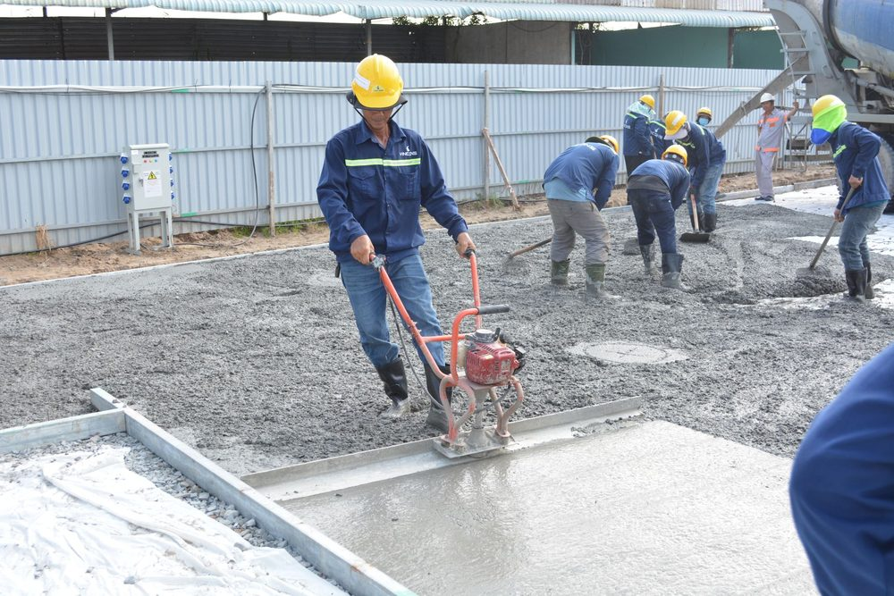
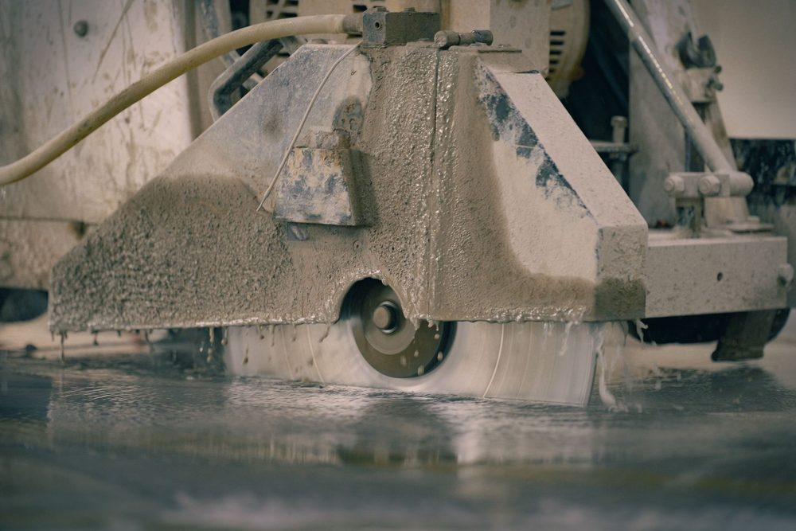

Qu'est-ce qu'un dallage, et en quoi diffère-t-il d'une dalle portée ?
Un dallage est un ouvrage en béton coulé directement sur le sol, par opposition à une dalle portée qui repose sur des poutres, des murs ou des poteaux et qui transmet ses charges par flexion à une structure porteuse. Le dallage, lui, transmet l'essentiel de ses charges directement au support par appui, ce qui en fait un ouvrage à part entière régi par un texte spécifique, le DTU 13.3 « Dallages, conception, calcul et exécution ».
Cette distinction n'est pas qu'un détail de vocabulaire. Un dallage dépend directement de la qualité du sol support et de la couche de forme sur laquelle il repose, alors qu'une dalle portée dépend surtout du dimensionnement de sa propre section et de ses appuis. Une bonne partie des pathologies observées sur les dallages provient précisément d'un support mal préparé, plus que d'un défaut du béton lui-même.
On rencontre des dallages aussi bien en dallage de garage ou de terrasse chez un particulier qu'en dallage industriel supportant des charges roulantes importantes. Les principes qui suivent s'appliquent aux deux, avec des exigences de dimensionnement proportionnellement plus poussées lorsque l'usage devient industriel ou commercial.
MH Structure dimensionne le dallage, pas la préparation du support. La note de calcul et le plan de ferraillage sortent de notre bureau d'études ; le terrassement, la mise en oeuvre de la forme et du hérisson, ainsi que le coulage, relèvent de l'entreprise de gros oeuvre en charge du chantier.
La fissuration de retrait : la pathologie la plus fréquente
Le béton, en durcissant puis en séchant, perd une partie de son eau et se rétracte légèrement. Ce phénomène, appelé retrait hydraulique, est normal et inévitable : il ne devient une pathologie que lorsqu'il n'est pas maîtrisé. Or un dallage coulé en grande surface ne peut pas se rétracter librement, il est retenu par le frottement contre son support et par ses propres bords. Cette retenue génère des contraintes de traction dans un matériau qui résiste très mal à la traction, d'où l'apparition de fissures.
Ces fissures de retrait apparaissent typiquement dans les premières semaines suivant le coulage, souvent en ligne relativement droite et à intervalles irréguliers si aucun dispositif n'a été prévu pour orienter le phénomène. Leur ouverture reste en général limitée, mais elles peuvent évoluer sous l'effet des charges d'exploitation et laisser passer l'humidité vers le support.
La parade principale n'est pas d'empêcher le retrait, ce qui est physiquement impossible, mais de le canaliser à des endroits choisis à l'avance : c'est tout le principe des joints de retrait, détaillés plus loin dans cet article.
Le faïençage : un désordre de surface souvent lié à la finition
Le faïençage se distingue de la fissuration de retrait par son aspect : un réseau très fin de microfissures superficielles, ressemblant à la surface craquelée d'une faïence ancienne, qui n'affecte en général que les tout premiers millimètres du béton. Il n'engage pas la tenue mécanique du dallage mais reste inesthétique et peut favoriser, à terme, une dégradation progressive de la peau du béton.
Sa cause principale est une dessiccation trop rapide de la surface pendant la prise, souvent aggravée par une finition excessive qui remonte trop de laitance, cette fine pellicule de ciment et d'eau, en surface. Une exposition directe au soleil ou au vent juste après le coulage, sans protection, accélère fortement le phénomène, un point de vigilance particulièrement sensible sous climat tropical.
Une cure du béton correctement menée, décrite plus loin, reste la meilleure protection contre le faïençage.

Le tassement différentiel : quand le support cède de façon inégale
Contrairement aux deux pathologies précédentes, qui trouvent leur origine dans le comportement propre du béton, le tassement différentiel provient du support. Il se manifeste lorsque le sol ou le remblai sur lequel repose le dallage se tasse de façon inégale d'un point à un autre, sous l'effet de son propre poids, de l'humidité ou d'une compaction insuffisante au moment des travaux de terrassement.
Le dallage, rigide, ne peut pas suivre ces mouvements différentiels sans se fissurer, en général selon un tracé qui reflète la zone la plus affaissée. Ce désordre est particulièrement fréquent lorsque le remblai support n'a pas été compacté par couches successives, ou lorsqu'il mélange des matériaux de nature différente sans traitement préalable.
C'est également pour cette raison qu'un dallage mérite la même attention géotechnique qu'une fondation : la nature du sol, sa portance et son homogénéité doivent être connues avant de fixer l'épaisseur de la couche de forme et le principe de compactage à retenir. En zone d'argile, le lien avec le phénomène de retrait-gonflement est direct : un dallage désolidarisé des fondations reste la disposition la plus sûre pour éviter que les mouvements du sol ne se répercutent sur l'ouvrage.
| Pathologie | Cause principale | Disposition préventive |
|---|---|---|
| Fissuration de retrait | Retrait hydraulique du béton non canalisé | Joints de retrait sciés, treillis soudé ou fibres |
| Faïençage | Dessiccation rapide de la surface, excès de finition | Cure du béton (produit de cure, bâchage, arrosage) |
| Tassement différentiel | Compactage insuffisant ou hétérogène du support | Compactage par couches, hérisson drainant homogène |
| Décollement / tuilage des bords | Retrait de surface plus fort qu'en profondeur | Cure adaptée, épaisseur et dosage conformes au DTU 13.3 |
Le décollement et le tuilage des bords
Le décollement, parfois appelé tuilage, se traduit par un relèvement des bords ou des angles du dallage, qui se désolidarisent de leur support et sonnent creux au passage. Il provient d'un retrait différentiel entre la surface du dallage, qui sèche plus vite et se rétracte davantage, et sa partie inférieure, restée plus humide plus longtemps. Cette différence de retrait courbe légèrement la dalle vers le haut sur ses bords.
Ce désordre est aggravé par une épaisseur insuffisante, un dosage en eau excessif du béton, ou une cure trop courte qui laisse la surface sécher trop rapidement par rapport au coeur de l'ouvrage. Une fois installé, le tuilage fragilise les bords du dallage face aux charges roulantes et accélère l'usure des joints.
Un dallage bien conçu reste un ouvrage exigeant à exécuter. La majorité des pathologies décrites dans cet article ne viennent pas d'une erreur de calcul mais d'une mise en oeuvre qui s'écarte des prescriptions du DTU 13.3 : préparation du support, dosage du béton, cure, sciage des joints dans les délais. Le meilleur plan ne remplace pas un chantier bien conduit.
Le rôle de la forme et du hérisson
Sous un dallage, deux couches préparent l'appui avant le coulage du béton. Le hérisson est une couche de gros granulats, généralement des cailloux ou des graves de granulométrie importante, posée directement sur le sol terrassé. Sa fonction est avant tout drainante : il coupe les remontées capillaires d'humidité depuis le sol vers le dallage et homogénéise la portance en comblant les irrégularités du terrassement.
Au-dessus du hérisson, la couche de forme, souvent en grave compactée, constitue le support immédiat et régulier du dallage. Elle doit être compactée par couches successives pour atteindre une portance homogène sur toute la surface du bâtiment : c'est précisément l'absence ou l'insuffisance de ce compactage qui provoque la plupart des tassements différentiels évoqués plus haut.
Un film polyane est généralement interposé entre la couche de forme et le dallage, pour limiter les remontées d'humidité résiduelles et désolidariser partiellement le dallage de son support, ce qui facilite son retrait libre.
Joints de retrait, joints de dilatation : deux fonctions à ne pas confondre
Les joints de retrait, aussi appelés joints de sciage, sont des saignées réalisées dans le dallage peu après son coulage, généralement dans les 24 à 48 heures, à une profondeur correspondant au tiers environ de l'épaisseur de la dalle. Leur rôle est de créer volontairement un plan de faiblesse à un endroit choisi, pour que la fissure de retrait s'y produise plutôt que n'importe où ailleurs de façon incontrôlée. L'espacement courant retenu par le DTU 13.3 se situe autour de 25 à 30 fois l'épaisseur du dallage, sans dépasser des trames de l'ordre de 5 à 6 mètres pour un dallage courant.
Les joints de dilatation répondent à une autre logique : ils désolidarisent complètement le dallage d'un élément rigide voisin, poteau, mur porteur ou bâtiment adjacent, afin que les mouvements thermiques ou les tassements différentiels de l'un ne se transmettent pas à l'autre. Contrairement au joint de retrait, le joint de dilatation traverse toute l'épaisseur du dallage et reçoit un matériau compressible qui autorise le mouvement relatif des deux parties.
Confondre les deux, ou négliger l'un au profit de l'autre, est une erreur fréquente sur les petits chantiers : un dallage désolidarisé de ses joints de retrait mais accroché en rive à un mur porteur continuera de se fissurer au droit de ce point de blocage, quel que soit le soin apporté au reste du sciage.
Treillis soudé, fibres et cure du béton
Le treillis soudé posé dans l'épaisseur du dallage n'a pas vocation à reprendre des charges structurelles : son rôle est de répartir finement le retrait et de limiter l'ouverture des fissures qui se forment malgré les joints, en les maintenant fermées plutôt que béantes. Il ne dispense en aucun cas de prévoir les joints de retrait au bon espacement.
Les fibres, métalliques ou synthétiques, mélangées directement au béton lors de sa fabrication, remplissent une fonction proche : elles cousent les microfissures à l'échelle de la matrice du béton. Selon le dosage et le type de fibre retenu, elles peuvent compléter, voire dans certains cas remplacer, le treillis soudé pour la seule fonction de contrôle du retrait, ce qui reste à valider projet par projet selon les charges et l'usage du dallage.
La cure du béton, enfin, regroupe l'ensemble des précautions prises après le coulage pour ralentir le séchage de la surface : produit de cure pulvérisé qui forme un film protecteur, bâchage, ou arrosage régulier durant les premiers jours. Cette étape, souvent perçue comme secondaire sur un chantier pressé, conditionne pourtant directement la résistance de surface du dallage et sa sensibilité au faïençage comme au tuilage. Elle rejoint les mêmes exigences de soin que celles décrites pour la reprise de bétonnage ou pour la protection des armatures via un enrobage correctement respecté.

Ce que MH Structure vérifie sur un dallage
Sur un projet neuf, MH Structure intègre le dallage à la descente de charges globale du bâtiment lorsqu'il reçoit des charges d'exploitation particulières, dimensionne son épaisseur et son ferraillage selon le DTU 13.3, et positionne les joints de retrait et de dilatation sur les plans d'exécution transmis à l'entreprise.
Sur un dallage existant qui présente des désordres, la démarche est différente : diagnostic visuel des fissures et de leur tracé, recherche de la cause probable parmi celles décrites dans cet article, et proposition de principes de reprise, avec la note de calcul associée si un renforcement structurel s'avère nécessaire. La réalisation des travaux, sciage, reprise de compactage ou réfection de surface, reste ensuite du ressort d'une entreprise de gros oeuvre.
Un dallage à dimensionner, ou des fissures à diagnostiquer ? Parlons de votre projet ou transmettez-nous des photos de votre dallage existant : nous identifions l'origine du désordre et proposons les principes de reprise ou de conception adaptés. Devis gratuit sous 48h.
Questions fréquentes
Un dallage béton doit-il obligatoirement être armé ?
Cela dépend de l'usage. Un dallage de type courant peut se limiter à un treillis soudé anti-fissuration, dont le rôle n'est pas de reprendre des efforts structurels mais de répartir le retrait du béton. Un dallage soumis à des charges roulantes importantes, en revanche, nécessite un dimensionnement complet selon le DTU 13.3, avec une épaisseur et un ferraillage calculés en fonction des charges et de la portance du support.
Pourquoi mon dallage se fissure-t-il en lignes régulières ?
Des fissures qui apparaissent en lignes régulières, souvent perpendiculaires aux bords, traduisent le plus souvent un retrait hydraulique mal maîtrisé faute de joints de retrait en nombre suffisant. Le béton se rétracte en séchant et, s'il ne dispose pas de plans de faiblesse créés volontairement par sciage, il se fissure de façon aléatoire à l'endroit où la contrainte de traction dépasse sa résistance.
Le hérisson est-il vraiment indispensable sous un dallage ?
Oui dans la grande majorité des cas. Le hérisson, cette couche de gros granulats posée sous la couche de forme, assure une fonction drainante qui coupe les remontées capillaires et homogénéise l'appui du dallage. Son absence ou sa mauvaise mise en oeuvre est une cause fréquente d'humidité résiduelle et de tassements localisés qui finissent par fissurer la dalle.
MH Structure intervient-il sur la pathologie d'un dallage existant ?
Oui. MH Structure réalise le diagnostic structurel d'un dallage fissuré ou dégradé, identifie l'origine du désordre et propose les principes de reprise adaptés, avec la note de calcul correspondante si un renforcement est nécessaire. La réalisation des travaux de reprise reste ensuite confiée à une entreprise de maçonnerie ou de gros oeuvre.